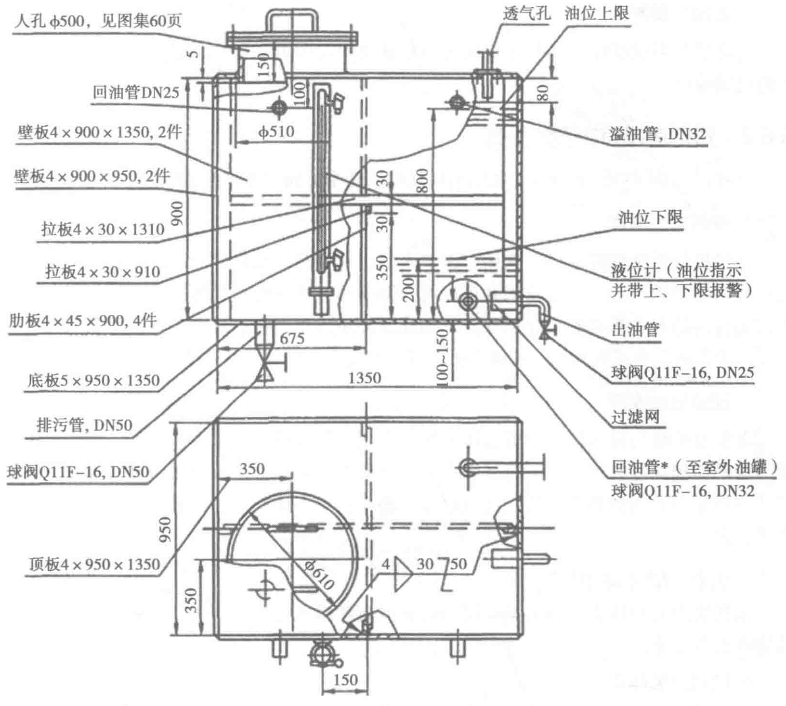

4. 冷却风扇和排风噪声
机组风扇噪声是由涡流噪声和旋转噪声组成的。旋转噪声是由风扇的叶片切割空气流产生周期性扰动而引起；涡流噪声是气流在旋转的叶片截面上分离时产生的，由于气体的黏性引起的旋涡流辐射一种非稳定的流动噪声。排风噪声、气流噪声、风扇噪声、机械噪声均是通过排风的通道辐射出去的。
5. 进风噪声
柴油发电机组在正常工作的时候需要有足够的新风供应，一方面保证发动机的正常工作，另一方面要给机组创造良好的散热条件，否则机组无法保证其使用性能。机组的进风系统基本包括进风通道和发动机本身的进气系统。机组的进风通道必须能够使新风顺畅地进入机房，同时机组的机械噪声、气流噪声也可以通过这个进风通道辐射到机房外面。